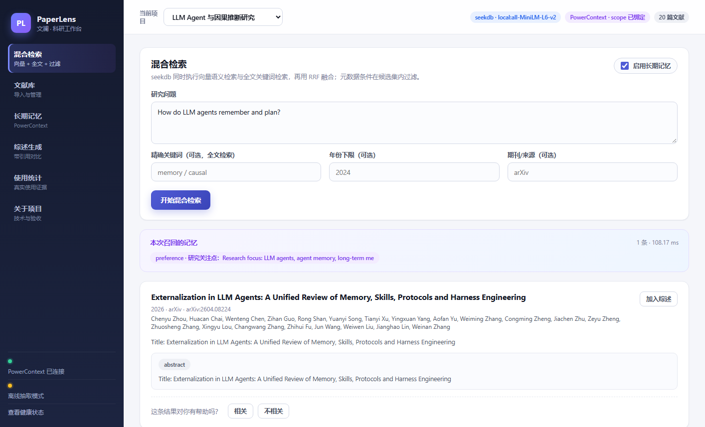

找不准
关键词搜不到语义相近的段落，纯向量检索又会漏掉精确术语、作者和年份条件。
PaperLens：向量 + 全文 + 标量过滤在同一次查询内完成，RRF 融合排序，结果逐条带章节与页码。
Qoder × OceanBase 2026 参赛作品
PaperLens 文澜面向科研阅读与写作：seekdb 在同一次查询里完成向量语义检索、全文关键词检索与元数据过滤， PowerContext 跨会话记住你的研究关注点、语言风格与已读进度。找文献、比方法、写综述，从一次提问开始。

真实痛点
围绕 LLM Agent 与因果推断主题，把 20 篇 arXiv 论文导入后，三类高频动作仍然很慢：
关键词搜不到语义相近的段落，纯向量检索又会漏掉精确术语、作者和年份条件。
PaperLens：向量 + 全文 + 标量过滤在同一次查询内完成，RRF 融合排序，结果逐条带章节与页码。
每次都要重新说明研究关注点、偏好的论文类型与写作风格，否定过的方向还会反复出现。
PaperLens：PowerContext 保存偏好、关注点、否定文献、阅读进度与反馈，检索和综述前自动召回。
对比多篇论文时要来回翻原文，整理完还容易丢引用，综述初稿变成二次劳动。
PaperLens：勾选文献生成「问题—方法—数据—结论—局限」对比，强制 [P#] 引用并校验越界编号。
核心功能
每个环节都留下可核对的检索记录或记忆读写 trace，而不是只在界面上“看起来能用”。
粘贴 arXiv 链接或上传 PDF，自动抽取元数据，按段落分块并写入 seekdb，保留章节与页码。
自然语言问题与精确关键词同时生效，年份、来源等元数据在候选集内过滤，再按 RRF 融合排序。
偏好、研究关注点、否定方向与阅读进度写入 PowerContext，检索与综述前自动准备上下文。
同一问题可一键开启或关闭记忆，界面直接展示“本次召回的记忆”，差异可复现、可截图。
SSE 流式输出对比表与综述初稿，每条结论标注 [P#]，生成后校验引用编号是否越界。
检索参数、结果、耗时写入 JSONL trace；使用事件与反馈进入 SQL 表，一键导出 CSV / JSON 与 Markdown。
技术实现
seekdb 负责“找到与出处”，PowerContext 负责“记住与复用”。两者都在主流程中实际生效。
Docker Compose 启动 app + powercontext 两个容器；前端构建后由 FastAPI 托管。
paper_chunks：id = paper_id#chunk_idx，正文作为 document，元数据随行存储。$contains 全文匹配、project_id / year / venue 过滤在同一次调用内完成。section、page 与距离。seekdb_search_trace.jsonl：输入、过滤条件、命中 id、耗时。collection.hybrid_search(
query={
"where_document": {"$contains": keyword},
"where": {"project_id": pid, "year": {"$gte": 2024}},
"n_results": 20,
},
knn={"query_texts": [question],
"where": {"project_id": pid},
"n_results": 20},
rank={"rrf": {}},
n_results=8,
)scope_id 存回应用库，跨会话复用。preference / interest / negative-interest / progress / focus / decision。/v1/memory/remember；检索 /v1/atomic-memory/search；生成前 /v1/context/prepare。powercontext_trace.jsonl。本次召回的记忆
preference研究关注点：LLM agents, agent memory, long-term memory, planning, evaluation；方法对比、可复现性与局限性
验收时记录到的 PowerContext 操作：ensure_scope、remember、search_memory、prepare_context、list_memory、forget_memory、capture_source。
界面演示
以下截图均在本地 Docker 环境实际运行，点击可放大查看。
[P#] 引用，越界编号会提示。同一问题的记忆开 / 关对比
实测数据
数据来自 evidence/verification/verify_report.md 与 evidence/usage/stats.json，可在仓库中核对。
| 检查项 | 结果 | 关键数据 |
|---|---|---|
| health | PASS | 20 篇文献 · PowerContext 已连接 · LLM 已配置 |
| seed_corpus | PASS | papers=20 |
| hybrid_search | PASS | 7 条结果 · 465.88 ms |
| scalar_filter | PASS | year ≥ 2025 收窄到 6 条 |
| memory_write | PASS | 5 条记忆可列出 |
| memory_recall | PASS | 召回 2 条，注入检索上下文 |
| synthesis_stream | PASS | 1,031 个 SSE 事件 · 1,825 字 · LLM 模式 |
| audit_traces | PASS | seekdb 30 条 · PowerContext 138 条 |
运行时间：2026-11-06 01:50 UTC；重新执行 python -m app.verify 可复现。
混合检索
30次
平均 515.5 ms · 向量 + 全文 + 过滤 + RRF
综述生成
16次
平均 1.83 s · 离线抽取与 LLM 流式均可用
记忆读写
6写 / 6 忘
每次写、搜、准备上下文与遗忘均留 trace
真实用户试用
进行中
试用人数、前后耗时对比与问卷结果将在采集完成后更新；当前数据为开发与内测阶段记录。
运行说明
seekdb 嵌入式后端与 PowerContext 依赖 Linux 运行时，Windows 请使用 Docker Desktop（WSL2 后端）。
cp .env.example .env
# 编辑 .env，填入 OPENAI_API_KEY / OPENAI_BASE_URL / LLM_MODEL
# 嵌入维度需与 EMBEDDING_MODEL 一致
docker compose up --build -d
docker compose exec -T app python -m app.seed
docker compose exec -T app python -m app.verify首次构建约 5–10 分钟。打开 http://localhost:8080，健康状态见 /api/health。
在检索页输入 How do LLM agents remember, plan and evaluate their work?，开启长期记忆。
预期：7 条结果，顶部显示本次召回的记忆，首条带章节与页码；检索 trace 写入 evidence/seekdb/。
年份下限填 2025，重复检索。
预期：候选集收窄到 6 条，年份均为 2025 / 2026。
在长期记忆页写入一条偏好，再执行一次检索。
预期：检索结果上方出现该记忆；遗忘后不再召回。
勾选 3 篇文献生成综述。
预期：SSE 依次返回 meta → delta → done，正文带 [P1]–[P3]，invalid_citations 为空。
Qoder 开发实践
账号 UID：nick049570947 · 桌面端（Qoder CN）。开发对话截图与 commit 对应关系见仓库 evidence/qoder/。
让 Qoder 只读代码、不改代码，梳理前后端架构与请求数据流，明确 seekdb / PowerContext 职责边界，输出按优先级排序的最小改动清单。
产出：模块调用链、三项薄弱点、P0/P1 改动清单。
解析最终答案中的 [P#]，只允许所选文献范围；越界编号通过 SSE done 的 invalid_citations 返回，前端在结果上方提示。
验证：3 篇文献下 [P0]、[P4] 被正确判为越界。
在综述结果区域增加「导出 Markdown」按钮，把当前 output 下载为带时间戳的 .md，包含问题、耗时、引用文献与正文。
实现：纯前端 Blob 下载，不改后端接口。
| 功能 | Qoder 完成的工作 | Commit |
|---|---|---|
| 架构分析 | 阅读全量前后端源码，输出调用链、薄弱点与改动清单 | 0ee6ac9 |
| 引用校验 | validate_citations + SSE 字段 + 前端警告 | 0ee6ac9 |
| Markdown 导出 | exportMarkdown、时间戳文件与引用列表 | 0ee6ac9 |
完整需求输入、完成说明与截图见 仓库 evidence/qoder/README.md。